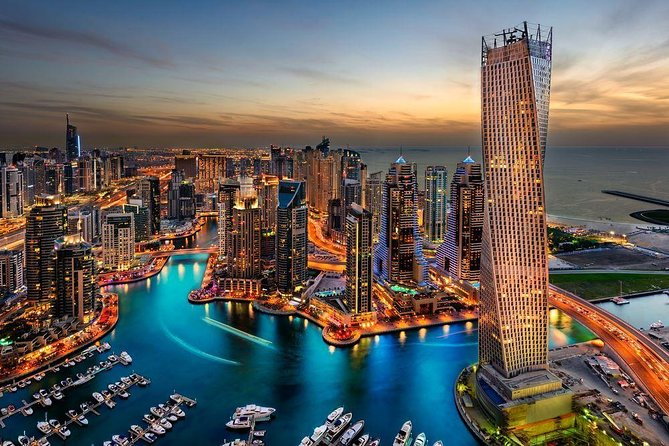

Japon
Es un país insular ubicado en el este de Asia, en el noroeste del océano Pacífico. Es mundialmente famoso por lograr un equilibrio único entre sus tradiciones milenarias y una innovación tecnológica vanguardista. Su capital y ciudad más grande es Tokio, considerada una de las metrópolis más pobladas e influyentes del planeta.
Brazil
Es el país más grande de América del Sur y el quinto más extenso de todo el mundo. Es famoso a nivel global por su inigualable biodiversidad, su pasión por el fútbol, sus playas tropicales y sus vibrantes expresiones culturales como el Carnaval de Río de Janeiro.

Dubai
Es la ciudad más grande y el principal centro económico de los Emiratos Árabes Unidos, famosa a nivel mundial por su arquitectura ultra moderna, sus rascacielos imponentes y su transformación de un pequeño puerto pesquero a una metrópolis global.